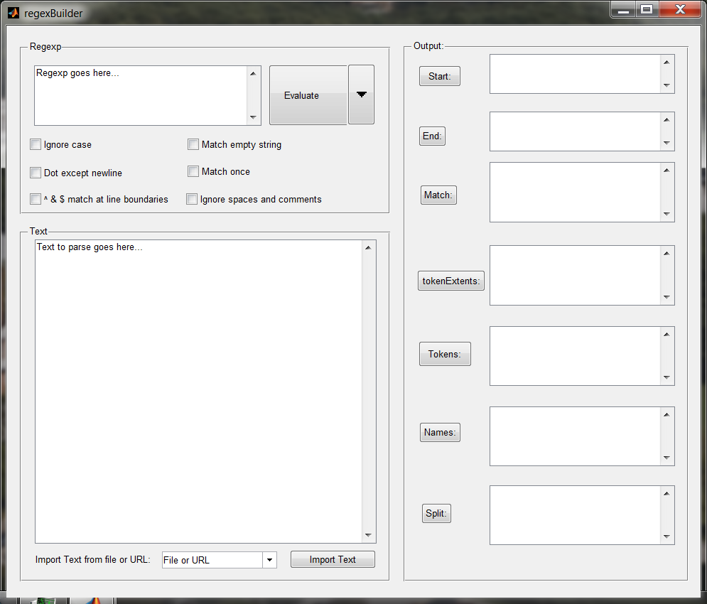
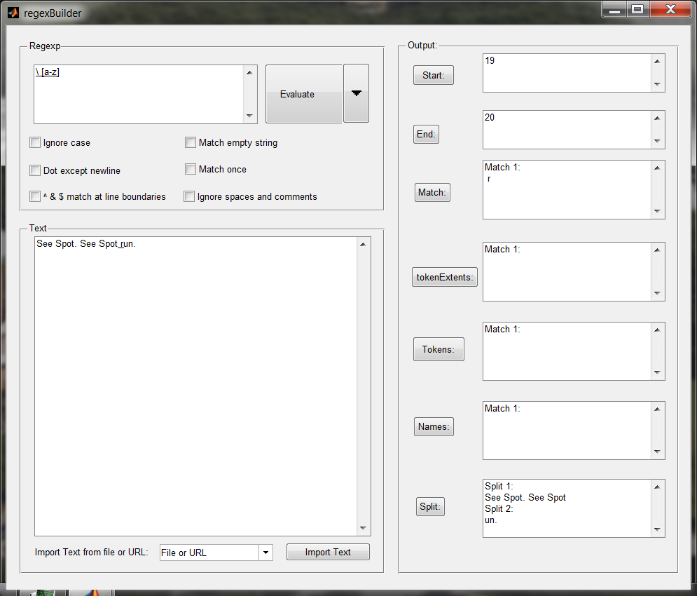
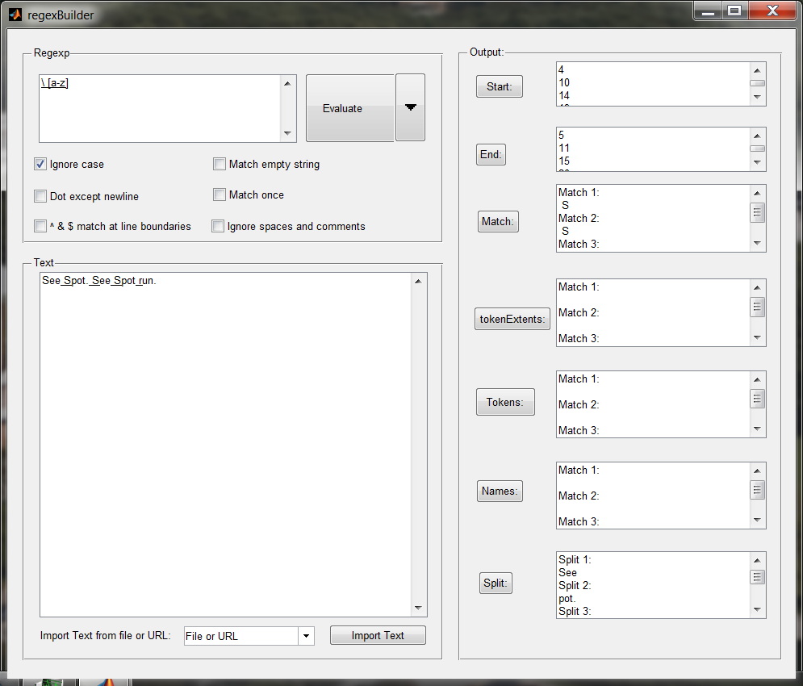
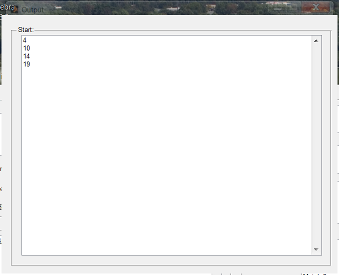
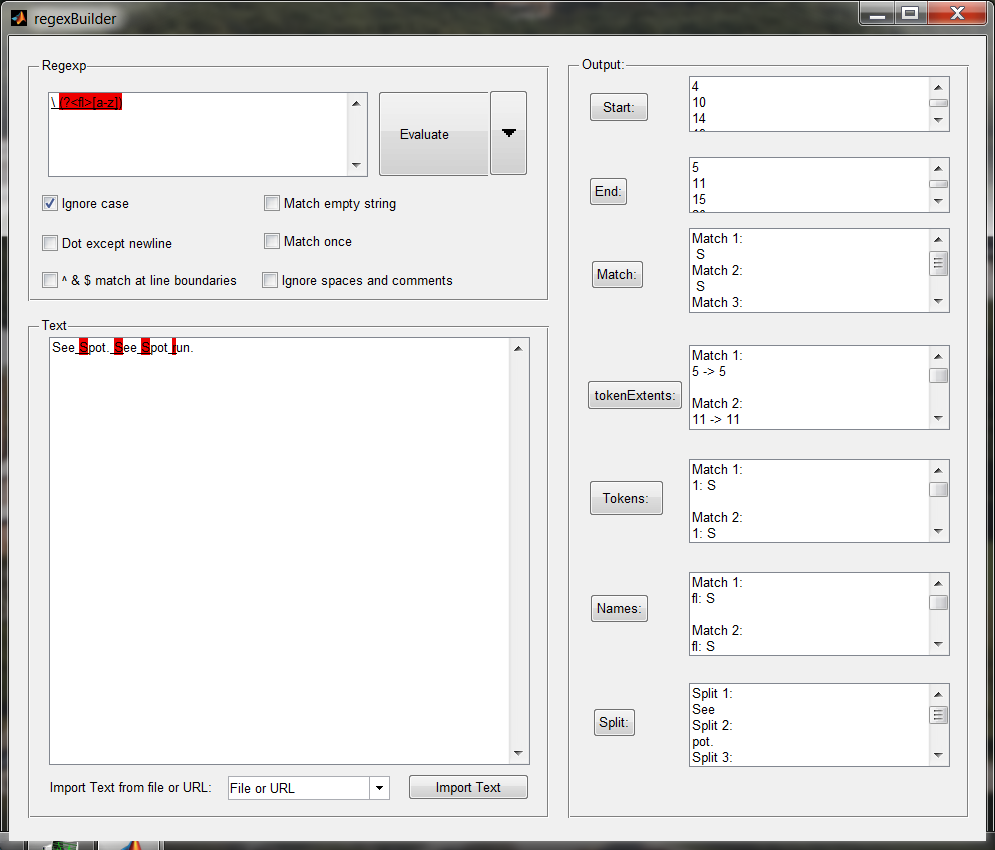
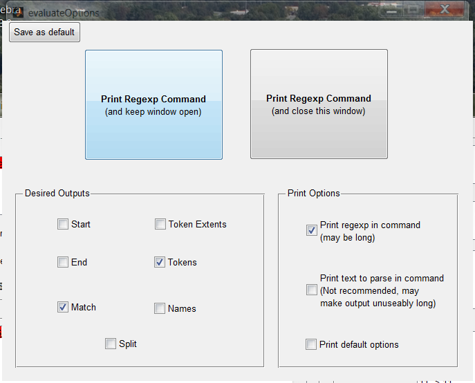
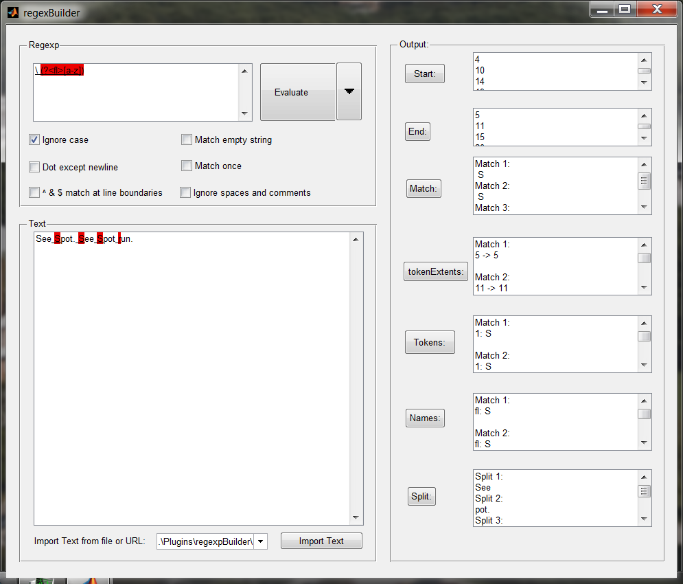
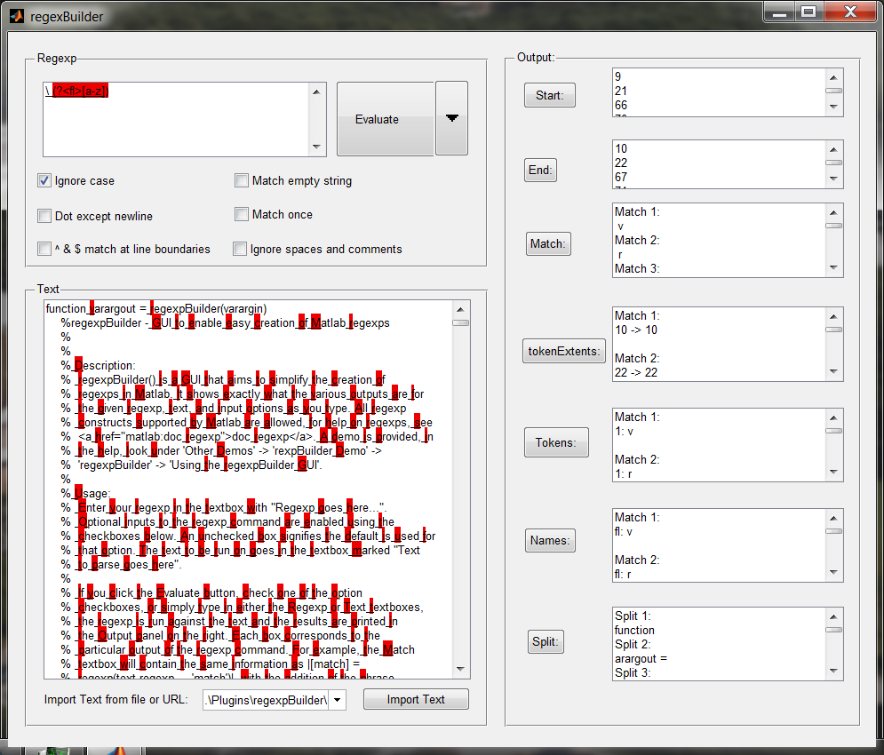

Running the regexpBuilder GUI
This demo is designed to explain how to use the regexpBuilder GUI and walk through a simple example
Contents
Open the regexpBuilder GUI
To begin using the regexpBuilder GUI, simply run the regexpBuilder script regexpBuilder.
regexpBuilder
Add the regexp
Adding the regexp means simply typing in the regexp we want to use (or copying and pasting, if we already have it somewhere else) into the regexp textbox.
For our example, we will use the the regexp \ [a-z], which looks for a space followed by a lowercase letter. After this, our GUI looks like the following:

Add the text
Adding the actual text we want to use the regexp on follows the same process. In our case, we'll use the string 'See Spot. See Spot run.'. Typing this into the text textbox, we get:
Using regexp options
Our regexp only finds lowercase letters, so it only matches the r in run. To have it also match the S in Spot and See, we can change the regexp, or we can click the Ignore Case checkbox. This toggles the ignorecase flag sent to our regexp command so that case no longer matters. Now our regexp matches the r and the S's:
Examining the Results
As you may notice, any matches found with the regexp are underlined as you type. They are also presented on the left side in seperate textboxes. Each textbox shows the output produced by the regexp command with that option selected for outselect. Clicking on any of the buttons will open a new, larger window showing that ouput.
Using tokens
Tokens are a powerful part of using regexp. They are created by inserting () around some portion of the regexp. They can then be refered to later in the regexp, in the substitute section of regexprep, or as output seperate from just the matched portions of the text. They can even be named, by using the (?<name> ) syntax. We'll name the first letter portion of our regexp fl, and make it into a named token. Our new regexp then looks like
\ (?<fl>[a-z])
regexpBuilder finds and highlights any tokens it finds in the regexp and also highlights any matches in the text. Each token gets a different color. Thus, after changing our regexp, the GUI should look like
Evaluating the regexp
regexpBuilder evaluates the regexp provided as you type and change options. It evaluates the regexp when you click the Evaluate button, but it also prints the regexp command with the specified options that were used to the Command Window in Matlab. This command can then be copied and pasted into wherever you want to use it.
The command we generate is
Using function call: [Start,End,TokenExtents,Match,Tokens,Names,Split] = regexp(TEXT,REGEXP,'start','end','tokenExtents','match','tokens','names','split','ignorecase');
Regexp Command printing options
The default options for printing the command can produce rather wordy output, as every output option is given. We can turn off extraneous outputs, along with substituting the actual regexp or text instead of their placeholders, in the Evaluate options menu, obtained by clicking the down-arrow next to the Evaluate button (opening the below window).
Options description
In this window, we can change what additional parts of the regexp command we want to display. For instance, if we only want the matching portion and the token list, and want to print the regexp that we are using, we deselect all but the Match and Tokens checkboxes, and select the Print regexp in command checkbox so that the window looks like the following:
Printing the command again
Once the options are set to your preferences, click either of the Print Regexp Command buttons (the difference should be self-evident). The options will be 'saved' when you close the window, but will not save when regexpBuilder is closed. If you want the settings to persist across regexpBuilder closings, click the Save as default button.
With our current options, we'll generate
Using function call: [Tokens,Match] = regexp(TEXT,'\ (?<fl>[a-z])','ignorecase','tokens','match');
Selecting a file to import
For our next trick, we'll import text from an outside source. We can import text from anything Matlab's urlread can handle, so we'll chose regexpBuilder's source file. Clicking on the down-arrow button next to the text field will open a file chooser dialog, but we will just type in the file name, like so.
Importing text
To actually import the text, simply click the Import Text button or press enter, and regexpBuilder will attempt to read in the file and add any text to the text textbox. Since Matlab has no problem reading a .m file, the source for regexpBuilder will appear:
